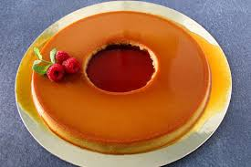

Pudim

Ready and delicious pudim
Surprise your family making this easy recipe of pudim for them!
After following this recipe you'll never forget and always surprise your guests with this deilicous brazillian plate!
Ingredients
Pudim:
- 1 can of condensed milk
- 4 eggs
- 1 cup milk
Steps
- Topping
In a pan, mix the water and sugar until it forms a liquid paste.
- Pour topping in a tray and coat it all the way on all sides.
- Pudim
Mix all ingredients in blender and pour into caramalized tray.
- Bake in bain-marie for 40 minutes.
- Best to serve cold ;)